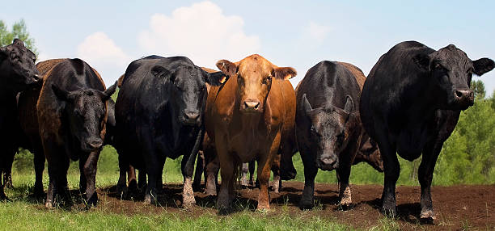

Welkom bij de website over mooi vlees
Net als met wijn heb je met vlees heel veel keuze in smaken. Er zijn naar schatting 600 verschillende smaken te ontdekken in rundvlees. De verschillende runderrassen zoals Angus, Hereford, Charolais,Wagyu, Blonde ‘d Aquitaine hebben allemaal hun eigen specifieke smaak. Daarnaast is de omgeving belangrijk waarin het rund leeft, en de voeding. De wijze van afmesten is belangrijk voor een goede marmering van het vlees.
Rundvlees is meer dan alleen maar mals en smaakvol. De malsheid van rundvlees kun je vertalen als ‘mondgevoel’. Rundvlees hoort niet papperig te zijn maar rundvlees hoort een mondgevoel te geven die klopt bij het soort vlees. Ossenhaas is zacht rundvlees omdat de spier niets doet. Het mondgevoel moet wel aangeven dat het vlees is, dus wel mooi zacht maar niet papperig. Een ribeye is iets steviger en het rundvlees heeft wat meer structuur. De byte hoort dan soepel te zijn maar je moet er wel een beetje op kauwen.
Aberdeen Angus, of Black Angus, vlees is premium vlees door een intensere smaak. De aanwezigheid van een klein beetje vet is het geheim, want dat zorgt voor veel smaak als het wordt gebakken. Een ras wat bijvoorbeeld ook meer vet in het vlees heeft, is het Japanse Wagyu rund. Het verschil tussen Angus en Wagyu zit in het feit dat Angus vlees iets minder vet is, precies goed. Angus staat bekend om de ‘marmering’ van het vlees: de dunne lijntjes vet die het zo lekker maken.
